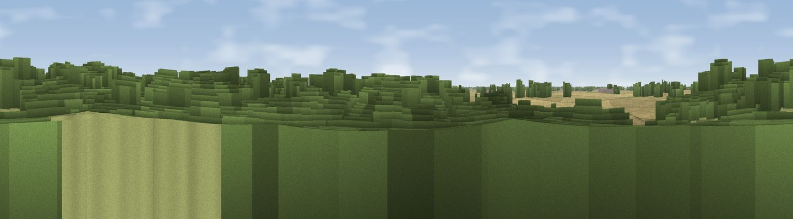

Collin Hill
#42516 in England · top 76% of its area beats it · near AldbroughWhere it is
The exact computed spot (TA 23222 41411). Click the marker for map links.
The view, rendered

A 360° render of this exact spot computed from the terrain model, tree cover and land cover — summer colours, afternoon light, calibrated against photographs of famous viewpoints. Real trees, hedges and buildings will differ in detail.
The panorama
Grey silhouette: terrain skyline in each direction (720 bearings, Earth curvature and refraction included). Dashed green: skyline with trees (+15 m) and buildings (+8 m) as obstacles. Blue strip: how far the ground is visible on each bearing.
Where the view opens
Wedge length = distance to the farthest visible ground on that bearing (vegetation-aware). Rings at 10, 25 and 50 km.
What fills the view
43% cropland · 34% woodland · 17% grassland · 6% water ·
Angular shares of the visible panorama (visual magnitude), not map area. Landscape diversity 0.54 (0–1 Shannon).
Key numbers
More beautiful places nearby
The staircase of upgrades: each row has a higher view potential than everything closer. Driving times are estimates from straight-line distance, calibrated against real road routing — check an actual route before setting out.
| Place | Direction | Drive | Score |
|---|---|---|---|
| Euber Hill | NNW · 3 km | ~8 min | 29.1 |
| Leys Hill | NNW · 8 km | ~16 min | 32.9 |
| Viewpoint near Willerby | WSW · 24 km | ~39 min | 57.9 |
| Viewpoint near Easington | SE · 25 km | ~41 min | 60.5 |
| Viewpoint near Flamborough | N · 28 km | ~44 min | 61.2 |
| Viewpoint near Flamborough | N · 31 km | ~49 min | 69.9 |
| Viewpoint near Bempton | N · 32 km | ~50 min | 70.2 |
| Viewpoint near Bempton | N · 33 km | ~51 min | 72.8 |
53.85431, -0.12815 · source: osm peak · position refined by local search. Computed location — check access rights before visiting.